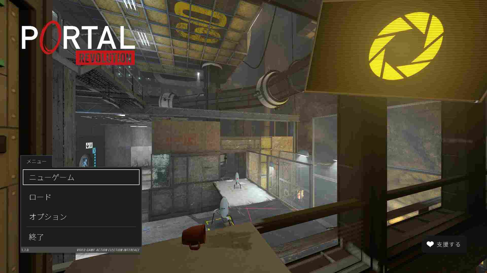
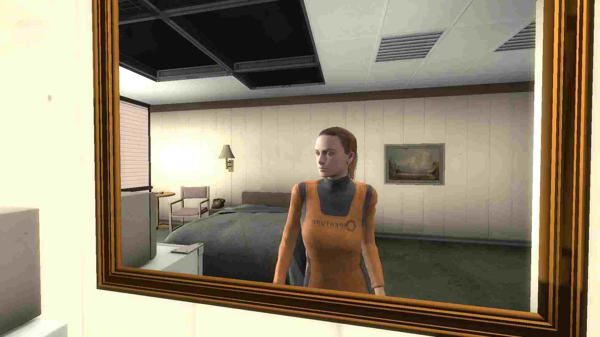
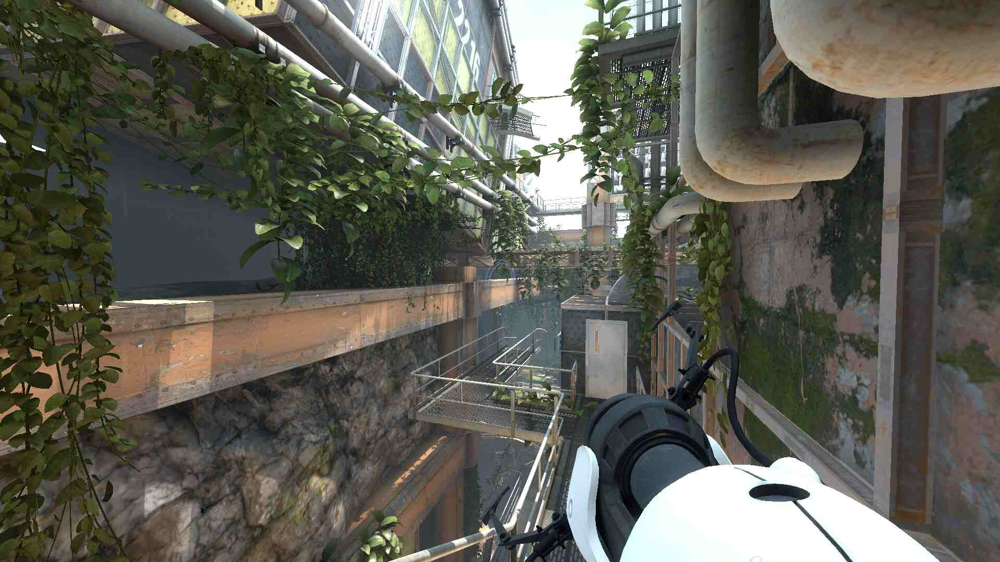
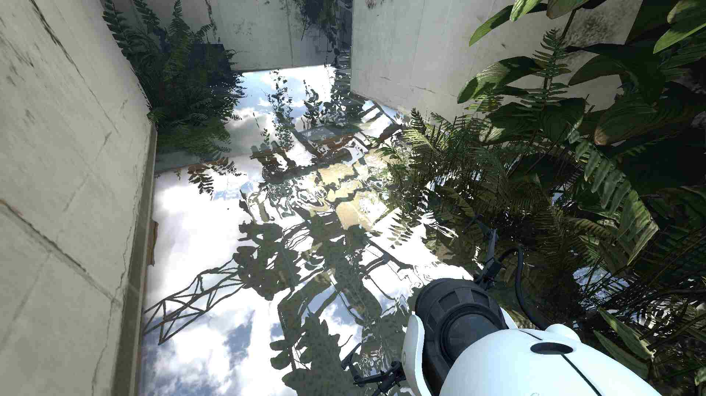
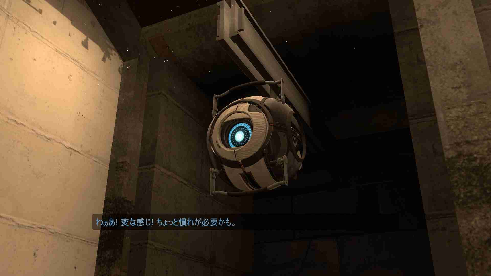
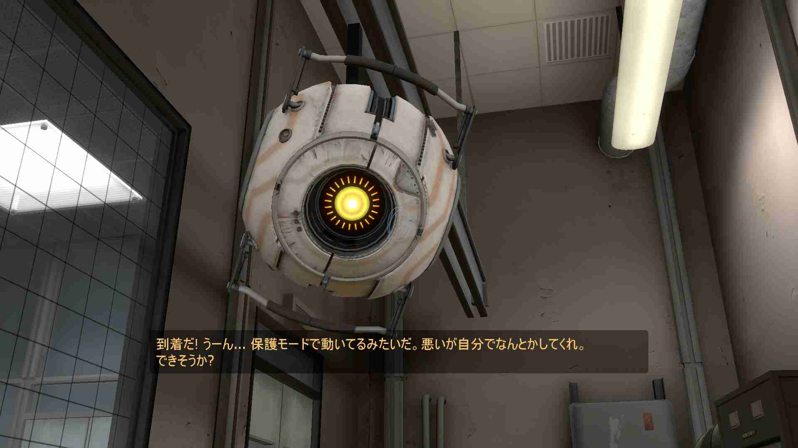
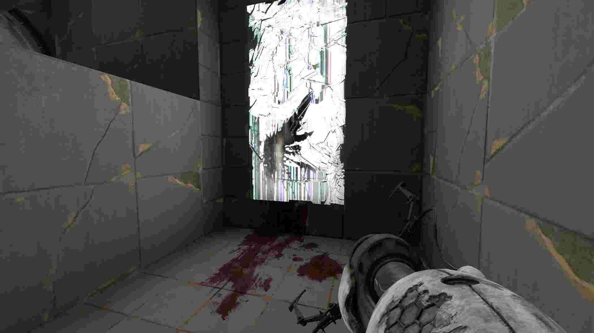
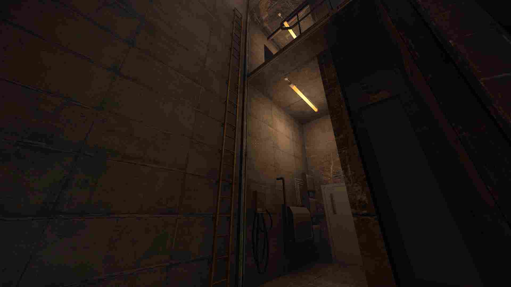

PortalシリーズのファンメイドMODをもう一つプレイした。この前プレイした『Portal Stories: Mel』と並んでおススメされていた2024年リリースの 『Portal Revolution』 である。
やはりこれも長編＆個別のストアページがあるという大作っぷり。『Portal Stories: Mel』は（難易度バカ高いのはさておき）圧倒的に「いい作品だ」と思えた一方、こちらもかなり楽しい作品となっているので、Portalシリーズが好きな人はプレイする価値が大いにあると思う。感想を書き留めておく。

今回から、致命的なネタバレにはぼかしをかけてみる。画像は無修正なのでゆるして...
❶パズルがMelほど難しくない
解けずに攻略動画を頼ってしまったテストはいくつかあったけど、それは本家遊んだ時もそうだったのでOK。『Portal Stories: Mel』と比べて、このゲームでパズルの難易度にイライラすることはかなり少なかった。ストーリーのテンポを乱さずにゲームを進めることができたのって、結構意味があると思う。
❷主人公の姿をはっきり確認できる
Portal2と同じように、このゲームもリラクゼーションルームからゲームが始まるのだが、その部屋には鏡が置いてあるのだ。なのでプレイヤーがどんな姿をしているのか、わざわざポータルを開けなくても見れるのは新鮮だ

▲Portalのチェルと同じくらい、顔が死んでいる。
❸廃墟がめちゃくちゃ綺麗
ゲームを進めていくうちに、草木が生えまくった廃エリアを抜ける必要があるのだが、生い茂った緑の草木、それとは真逆の無機質な建物、オフィスがあったと思われる残骸、アルミの手すりや階段、綺麗な青空とそれを映し出す水たまり…というふうに、乱雑とした状況だが見ていてどこか清々しい景色が続く。「ゲーム内の景色に見とれてしまうとはなあ」と思いながら、ゆっくり歩いて堪能した。


▲水たまりの表現が綺麗すぎる。別にここはなんでもない通路なのに･･･。
❹人格コアが可愛い
物語の前半と後半でそれぞれ別の人格コアが主人公と同行するが、かなり後半に出てくる人格コアが本当にかわいい。白黒ベースのボディの一部分が透明な素材でできておりとても特徴的。質のいいファンゲームは、本家の世界観を崩さない秀逸なキャラクターデザインを楽しめるので良い。

▲今更だけど日本語訳ついてるの素晴らしいよな
❶異常に早く展開が読めてしまう
前半パートで世話になる人格コアのスターリンに対して、「お前怪しいな」とプレイヤーに感じさせるタイミングが、あまりにも早すぎる気がした。
Portal2を遊んだオタク達は無意識に
「仲良くなった人格コアはそのうち敵になる」と脳が学習してしまったと思うが、スターリンは結構早い段階でうさん臭さが出てくる。なんだかそっけないというか、とっつきにくい感じなのだ。
▲木目調でカワイイけどモチーフは何だろうか？
❷簡単すぎるテストが混じっている
難しいテストを連続で続けさせられるというのは疲れるが、このゲームは逆に「チュートリアルですか？」と思ってしまうほど簡単すぎるテストがいくつかあった…。それが連続で続くこともあって少し気になる。

▲とは言っても簡単なテストにクソ難しい実績が割り当てられていたりもする。タレット達を一切傷つけずにチェンバーから出る実績は地獄だよ
❸延々と歩くだけのパートがあってダルい
これは単純にすっげえ疲れた。
どこに向かえばいいのか分かりづらい部分や、洋ゲー特有の「暗すぎて何も見えない」というアジアン殺しな要素も重なり、ただの徒歩移動ですら迷子になり攻略動画を見るという羽目になった…(笑)

▲このハシゴが全く認識できず時間を浪費し、心が折れそうになった
 Portal Revolutionをクリアした
Portal Revolutionをクリアした